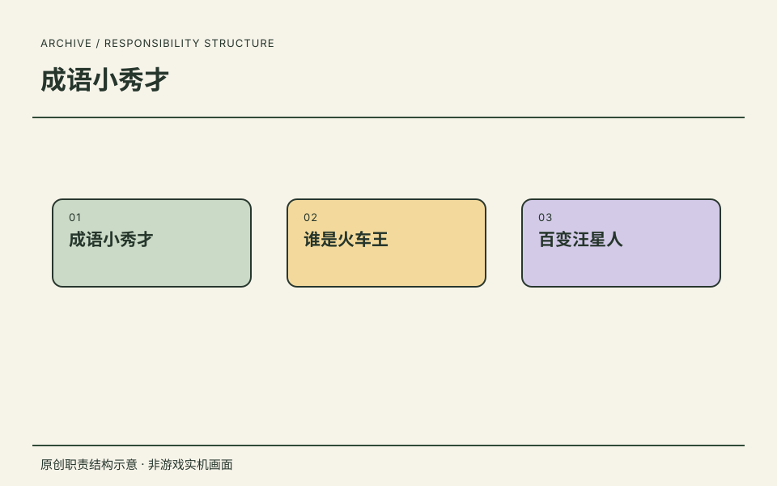
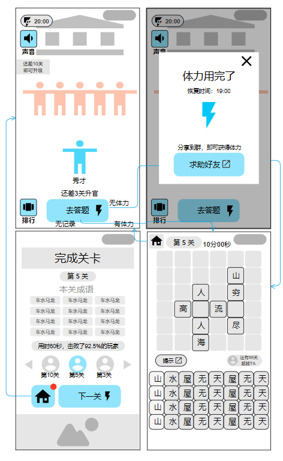
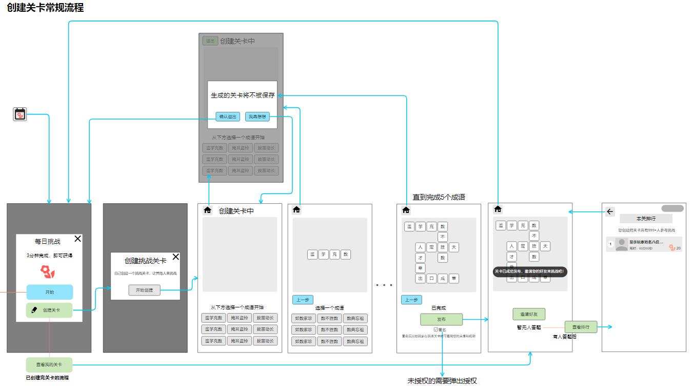
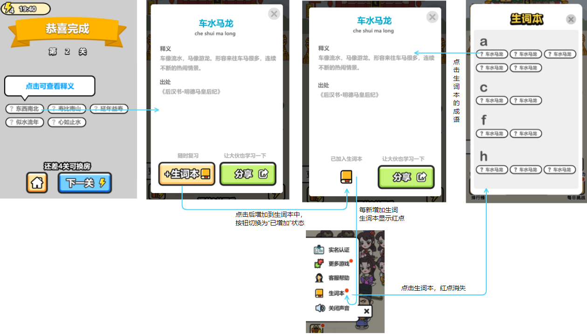

08 / 项目卡带档案 · PROJECT 01
成语小秀才.
主策划
以主策划身份参与，围绕成长循环、填字判定、每日挑战和 UI/UE 展开工作价值说明，用项目方案呈现状态、异常分支与交互设计思路。
任职角色沿用履历记录；具体贡献按项目资料区分，共同职责不逐项归为单个项目的独立成果。
01
从核心规则到成长目标
- 具体工作
- 以主策划身份参与项目，用成长和填字文档展开关卡进度、字块判定、错误恢复及成长反馈的设计讨论。
- 工作价值
- 说明设计不止核心点子，还涉及可实现的状态和判定规则；具体文档作者未逐项确认。
系统与玩法资料 ↗02
扩展内容与交互路径
- 具体工作
- 以每日挑战、玩家创建关卡、新手引导和生词本资料，展开发布、返回、收藏与重复阅读等交互取舍。
- 工作价值
- 让面试官看到内容扩展和 UI/UE 思路，而非单纯产品介绍；原图与团队美术不归为本人独立执行。
挑战与交互资料 ↗
工作价值说明设计思路与职责意义，不等同于已验证的经营成果。项目原图、方案和署名依据保留在对应资料中。

原创职责结构示意 · 非游戏实机画面ROLE / 我的角色主策划
以主策划身份参与，围绕成长循环、填字判定、每日挑战和 UI/UE 展开工作价值说明，用项目方案呈现状态、异常分支与交互设计思路。
CAREER / 项目记录任职记录
以主策划身份参与《成语小秀才》、《谁是火车王》、《百变汪星人》。
这里保留任职角色与项目记录。
RECORD / 可追溯记录项目记录
《成语小秀才》列于这段任职经历中。
- 任职公司
- 北京豪腾嘉科科技有限公司（疯狂游戏）
- 角色
- 主策划
- 时间
- 2018.02—2019.08
任职、角色与职责依据本人履历及确认。图示是本站原创的职责结构表达。
DESIGN EVIDENCE / 项目资料
成语项目设计资料.
系统规则、玩法状态与界面流程。
任职与项目参与依据本人已确认履历。以下为项目文档摘要和界面参考，文档元数据不能单独证明具体作者；不将全部方案归为个人独立完成。美术执行由团队相应岗位承担。方案图不代表所有功能最终上线，图中的示例排名、奖励与时间不作为经营成果。
SYSTEM DESIGN
系统策划
不只列出功能，还要说明进度如何记录、状态如何转换，以及失败或中断后怎样继续。

《养成玩法系统设计》嵌入流程图查看原图 ↗答题与成长循环
设计问题
如何让短关卡的完成形成可感知的成长，并保持入口、体力和进度逻辑一致？
关键方案
- 将关卡区分为已完成、未完成和未解锁；已经解锁的未完成关卡保留填字状态，再次进入不重复扣除解锁消耗。
- 通关后判断成长事件，在返回入口显示红点；回到主界面后点亮升级按钮，并显示距离下一次成长的目标。
- 多个成长事件按顺序处理；升级动画被切换界面或退出打断时，下次直接展示升级后的资源。
文档产出
《养成玩法系统设计》包含关卡状态、进入条件、成长事件顺序、红点规则，以及界面和动画需求。示意图是方案参考，不是实际成绩报告。
展开答题与成长循环大图

《每日挑战系统设计》创建关卡流程图查看原图 ↗每日挑战与玩家创建关卡
设计问题
如何在核心填字之外组织每日内容，并让玩家可创建、发布和分享挑战？
关键方案
- 每日挑战说明入口解锁、计时、结算与排行榜；区分有数据和空榜，处理每日刷新时仍处于旧挑战的情况。
- 创建关卡按成语共用字连接，检查相邻限制与答题区边界；无候选项时提示回到上一步，未完成退出时确认是否放弃。
- 发布后连接好友挑战与本关排行；将新手未完成、功能未解锁、已经完成和未授权等分支分别说明。
文档产出
《每日挑战系统设计》交付常规流程、创建与撤回路径、授权分支、空榜状态、难度约束及 UI/音效需求；概率和后端配置不在此公开。
展开每日挑战与玩家创建关卡大图
GAMEPLAY RULES
玩法设计
把“选字填空”写成可实现、可检查的操作与判定规则。
字块状态与反馈
上方为答题区，下方为待填区。玩家先选择目标格，再选择汉字；组成成语后触发判定。
《填字核心玩法文档说明》规则摘要| 字块状态 | 操作与反馈 |
|---|
| 空白 | 可选择，显示当前目标。 |
|---|
| 固定 | 由关卡给定，不可选择或撤回。 |
|---|
| 已填 | 点击撤回到待填区，重新选择。 |
|---|
| 判定正确 | 整组成语变为绿色固定状态。 |
|---|
| 判定错误 | 变红并晃动，保留撤回机会。 |
|---|
文档还区分选择、填入、正确、错误与提示音效；判定音覆盖普通点击音，多个判定同时触发时避免重复播放。
UI / USER EXPERIENCE
UI/UE 交互设计
兼顾界面密度、第一次操作、错误后的恢复，以及完成后的学习路径。

《成语生词本设计》嵌入交互图查看原图 ↗从结算到收藏复习
设计问题
如何让玩家看完答案后继续查看释义，并保存不熟悉的成语？
关键方案
- 结算中的成语可进入释义，再添加到生词本；添加成功后按钮切换为已加入状态。
- 从主界面折叠菜单进入生词本，按首字母分组；点选词条复用释义界面，不另造一套详情。
- 补充删除与还原状态；收藏变化通过入口红点反馈，并明确查看后红点消失的时机。
文档产出
《成语生词本设计》包含双入口路径、收藏/删除状态、字母分组、详情复用和红点迭代说明。
展开从结算到收藏复习大图
根据内容密度调整字块
《适配答题界面字块布局》按题面占用与候选字数量切换布局，让稀疏题面使用更大的字块。
文档中的布局组合| 答题区 | 候选字区 |
|---|
| 7 × 7 | 6 × 2 |
| 8 × 8 | 7 × 3 |
| 9 × 9 | 8 × 4 |
说明中明确上方横纵尺寸的判断条件，以及候选字较少时的放大方式；不是单纯按屏幕比例缩放。
强引导之后，留出自主操作
《新手引导说明》先指定一次选字，再让玩家自由填完；随后连接返回、晋升和继续答题，完整展示一次成长反馈。
- 第一次选字：强引导演示填入。
- 完成关卡：弱提示下自主操作。
- 返回与晋升：连接答题和成长。
- 首次填错：提示点击错字撤回。
- 首次停滞：提示可用的帮助入口。
补充提示出现、关闭和不再重复的条件，避免引导持续遮挡操作。
INTERFACE REFERENCES
界面与美术资源
主界面承载成长目标和功能入口，释义界面组织标题、拼音、解释与出处。两张图用于对照信息层级，不用于认定个人美术制作。
资料来源与公开范围
- 系统：养成玩法系统设计、每日挑战系统设计。
- 玩法：填字核心玩法文档说明。
- 交互：适配答题界面字块布局、新手引导说明、成语生词本设计。
- 资源：上述文档的精选嵌入图片，以及项目 UI 释义界面资源。
本文展示经筛选的图文与重新整理的规则摘要，不提供完整内部文档、配置表、统计报表或第三方素材库。历史方案中的目标不作为已达成指标，迭代设想不等于最终上线内容。